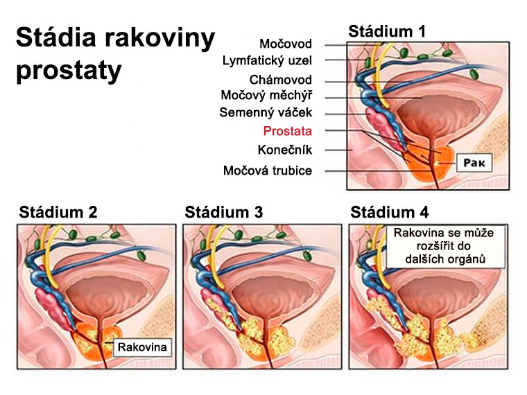
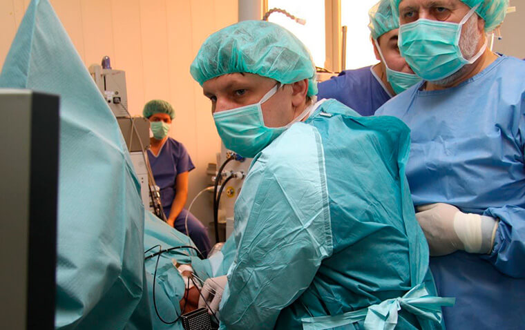
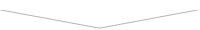

Podle statistik jsou močové dysfunkce tak či onak sledovány u každého druhého muže po 40
letech. Tento problém však s lékaři řeší pouze několik. Z větší části si ani neuvědomují,
jaká nebezpečí hrozí.
Inovativní prostředek , vytvořený nejlepšími vědci, je navržen tak, aby zachránil mužskou populaci naší země před hroznými onemocněními.
Pro více informací o programu „Zdraví mužů“ jsme požádali, aby nám řekl více známý urolog, profesor Štěpán Kučera.
- Štěpán Kučera:
Upřímně, někdy mi připadá hrozné se postavit za muže, kteří nevěnují potřebnou pozornost svému zdraví.
Problémy s močením (časté nebo opožděné) a noční močení v téměř 90% případů bez včasné léčby vedou k zánětu ledvin a tvorbě kamenů v nich, stejně jako k zbytnění a rakovině prostaty. Pokud to někdo neví, jsou všechna tato onemocnění smrtelně nebezpečná a v posledních stádiích jsou léčena pouze chirurgickým přístupem (a ne vždy spěšně!).
Navíc, od problému s močením před projevem těchto zhoubných nemocí, to může trvat trochu déle - několik měsíců.
Nejčastěji jsou problémy s močením a potřeba dostat se během noci na záchod, jsou přímými důsledky nemocí prostaty. Jednoduše řečeno, jsou důsledkem chronické prostatitidy.
– prostředek nové generace zaměřený na léčbu prostatitidy. V důsledku toho jsou eliminovány příčiny nesprávného odtoku moči, problémy s močením mizí a riziko nebezpečných komplikací je minimalizováno.
Hlavní výhodou tohoto preparátu je to, že pomáhá léčit nemoci genitourinárního systému v domácím prostředí bez návštěvy lékaře. Konec konců, tahat muže na kliniku, a to s tak citlivým problémem, je nesmírně obtížné. U prostředku by se to nemusí dělat - lze ho léčit doma.
Preparát má plně přírodní obsah, a proto není schopen poškodit organizmus a může být použit všemi muži, aniž by se museli podrobit lékařskému vyšetření.
A také nás tento prostředek jednoduše šokoval svou účinností! Před zahájením programu jsme samozřejmě provedli klinická hodnocení mnoha prostředků pro léčbu močových problémů. Nejlepší výsledky dosáhl . Jeho výsledek je téměř třikrát vyšší než u jiných prostředků, včetně dovážených, drahých prostředků!
obsahuje:
pomáhá rychle, efektivně a bezpečně, což ukazují klinické testy.
Nenechte to dojít k operaci! Léčte problémy s močením doma, dokud není příliš pozdě!
Ano, absolutně každý muž. Je pravda, že existuje jedno ale. V tuto chvíli je zvýhodněný program platný pouze na území hlavního města Prahy.
Důvodem je skutečnost, že lékárnické řetězce nám odmítly pomoci s implementací tohoto preparátu. Zdůvodnily svou neochotu tak, že je to pro ně bylo ekonomicky nevýhodné. Je zvláštní, jak to může vypadat, že lékárny jsou všechny stejné obchodní organizace, které mají větší zájem o zisk než o ozdravení populace.
Tehdy jsme se rozhodli prodávat prostřednictvím speciálně vytvořeného webu. Pracovat najednou pro celou zemi je však nemožné, a proto jsme se rozhodli provést zvýhodněný program postupně ve všech regionech země. V současné době se koná v Praze. Konkrétně obyvatelé tohoto regionu dnes mohou koupit lék za minimální cenu.
Poté program spustíme v dalších regionech České republiky.
To je správně. Lhůta pro ukončení zvýhodněné akce v Praze je 22.22.2222 Před tímto termínem (včetně) je nutné nechat objednávku na webu. Proto ti, kteří chtějí koupit se slevou a prodělat s pomocí léku kůru proti problémům s močením, prosím, podívejte se! Obyvatelé jiných regionů však mají dobrou zprávu - tento účinný nástroj si můžete objednat také na oficiálních webových stránkách! Ve stejné době je zde akce, podle které lze prostředek zakoupit pouze na
V tuto chvíli již koupilo několik desítek tisíc lidí. Každý den k tomu dostáváme mnoho pozitivních komentářů, stejně jako slova poděkování. Tento prostředek pomáhá všem
.Upozornění: informace zobrazené na stránce jsou marketingovou kampaní a nesouvisejí s vládními programy. Logotypy jsou majetkem příslušných vlastníků. Reklamní práva.
Nedávné komentáře:
